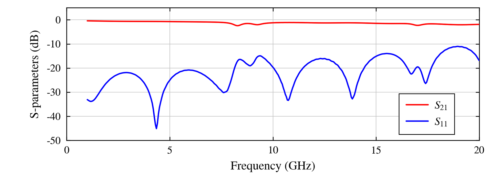

Abstract
- 1Department of Quantum Engineering, Sungkyunkwan University, Suwon, Gyeonggi, Republic of Korea
Scalable superconducting quantum computing requires RF interconnects that combine broadband electrical performance with compact packaging and low thermal loading. We present ongoing development of flexible RF cables and passive components for cryogenic quantum hardware. We are developing polyimide-based cables using silver (Ag) or niobium–titanium (NbTi) conductors, together with PCB transitions and copper clamp mounts. Direct-connected microstrip and stripline prototypes have been fabricated. Room-temperature measurements of an Ag microstrip through-line show an insertion loss below 2.5 dB and a return loss above 11 dB over 1–20 GHz (Fig. 1). Building on these initial measurements, the next step is to measure the thru, line 1, line 2, and reflect standards and perform thru-reflect-line (TRL) calibration under cryogenic conditions. In parallel, electromagnetic simulation of a two-channel cable has been completed, while fabrication remains a next-stage task. Our longer-term goal is to develop multichannel flexible cables with integrated filters and attenuators, targeting increased channel density and reduced heat load. Our test infrastructure includes a room-temperature RF probe station and a dilution refrigerator for cryogenic hardware evaluation. Further work will pursue the integration of transmission lines, passive components, and packaging toward compact interconnect solutions for superconducting quantum systems.
